Q1. USA Markets
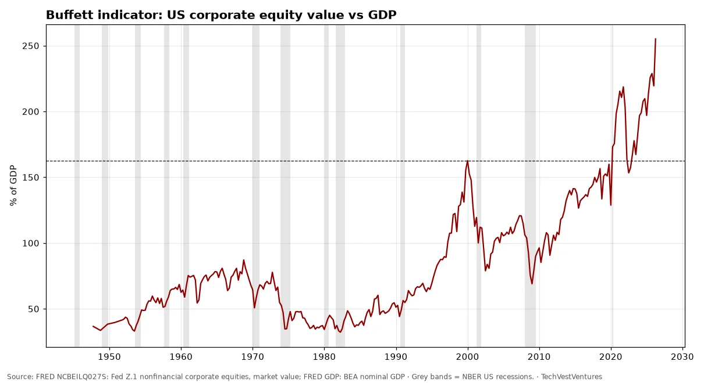
Market value of US nonfinancial corporate equities divided by GDP stood at 255% in Apr 2026 (quarter start), against 163% at the dot-com peak (Jan 2000) and a post-1945 median of 72%. Warren Buffett called this ratio 'probably the best single measure' of valuation in 2001. A high reading has preceded poor 10-year returns, but it has not timed crashes: the ratio has stayed above the 2000 peak for long stretches since 2020.
Sources: FRED NCBEILQ027S: Fed Z.1 nonfinancial corporate equities, market value FRED GDP: BEA nominal GDP

Robert Shiller's cyclically adjusted P/E for the S&P Composite. Long-run mean 17.5. Peaks: 32.6 in 1929, 44.2 in 1999, 38.6 in 2021; last value in the public file 35.2 (Sep 2024). Pattern count: only three prior readings above 30 (1929, 1997–2001, 2021) — 3 cycles, so by Michael Hentschel's rule a 'repeat' is suggestive, not proven. Note: the public Yale file we could reach ends Sep 2024.

Debit balances in customers' securities margin accounts reached $1,480bn in Sep 2026, up 31% from a year earlier. Earlier local peaks in margin debt came in March 2000, mid-2007 and late 2021, each shortly before a major market decline — three episodes in this 1997+ series, which is too few to treat as a reliable timing rule.
Sources: FINRA margin statistics

10-year minus 2-year Treasury spread +0.31 pts and 10-year minus 3-month +0.78 pts on Oct 23, 2026. The 10y–2y curve inverted from July 2022 and turned positive again in Aug 2024. Since 1976 every recession was preceded by 10y–2y inversion, and recessions have usually begun after the curve un-inverts. Counting: 1978, 1988, 1998–2000, 2006, 2019 inversions — 5 episodes before the 2022 one, so this is one of the better-supported repeat patterns, though lead times varied from about 6 to 24 months and 2022's inversion has not (yet) been followed by an NBER recession.
Sources: FRED T10Y2Y: 10y minus 2y Treasury FRED T10Y3M: 10y minus 3m Treasury FRED USREC: NBER recession indicator
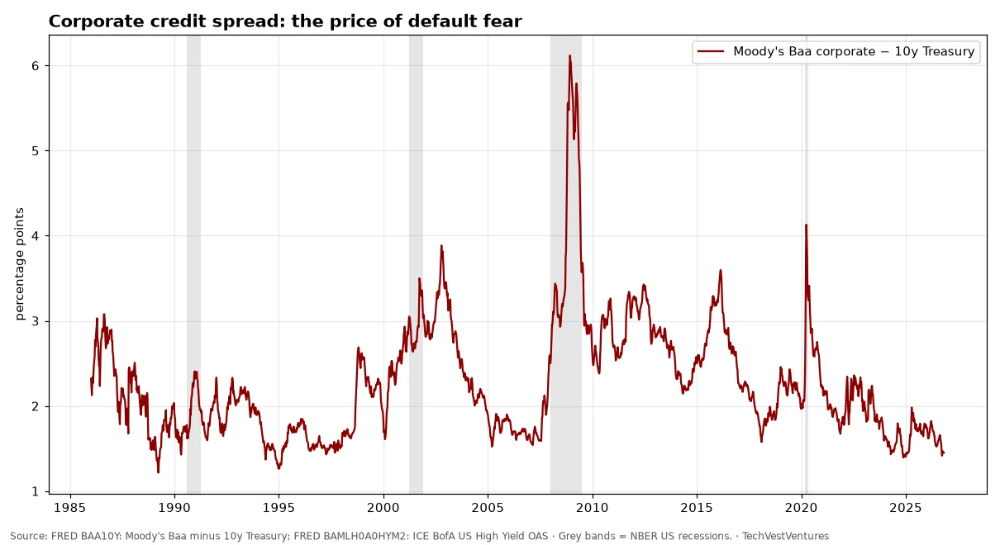
Baa corporate bond yield over the 10-year Treasury was 1.46 pts on Oct 22, 2026, near the low end of its range since 1986 (median 2.13; peak 6.16 in Dec 2008). ICE BofA US high-yield option-adjusted spread: 3.40 pts. Tight spreads mean lenders are pricing little risk; spreads have widened sharply in every recession shown, but they move with, not ahead of, a crisis.
Sources: FRED BAA10Y: Moody's Baa minus 10y Treasury FRED BAMLH0A0HYM2: ICE BofA US High Yield OAS
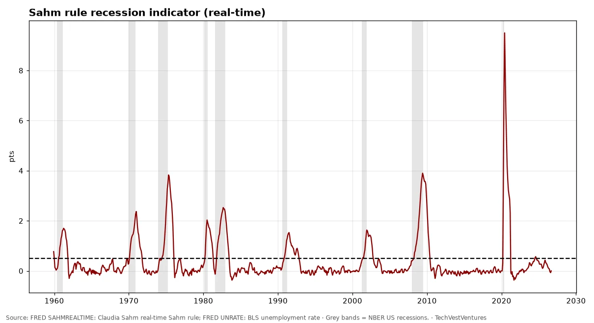
The Sahm rule triggers when the 3-month average unemployment rate rises 0.50 pt above its low of the prior 12 months. Reading: 0.00 for Sep 2026; the 2024 reading peaked at 0.57 without a recession being declared. Before 2024 the rule had flagged every US recession since 1970 with no false positives, i.e. about 8 cycles.
Sources: FRED SAHMREALTIME: Claudia Sahm real-time Sahm rule FRED UNRATE: BLS unemployment rate
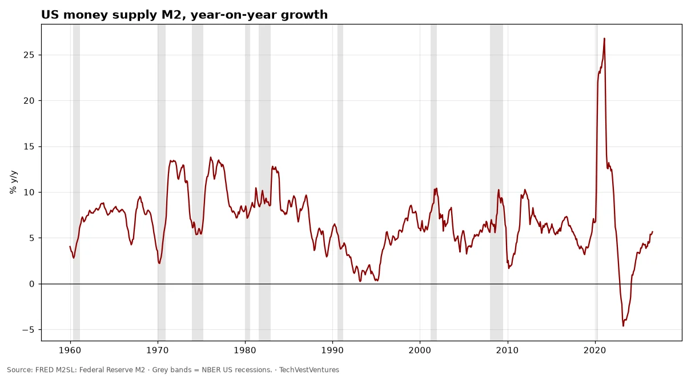
M2 grew 5.7% y/y in Aug 2026, level $23.3 trillion. The 2020–21 surge peaked at 26.8% (Feb 2021) and was followed by the first outright M2 contraction since the 1930s (low -4.6% in Apr 2023).
Sources: FRED M2SL: Federal Reserve M2
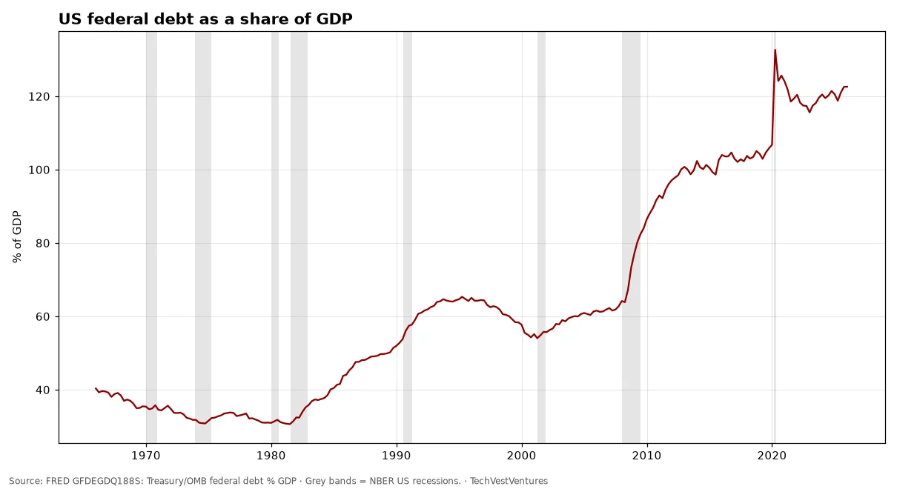
Total public debt was 123% of GDP in Jan 2026 (quarter start), versus 40% in 1966 and 62% in 2007.
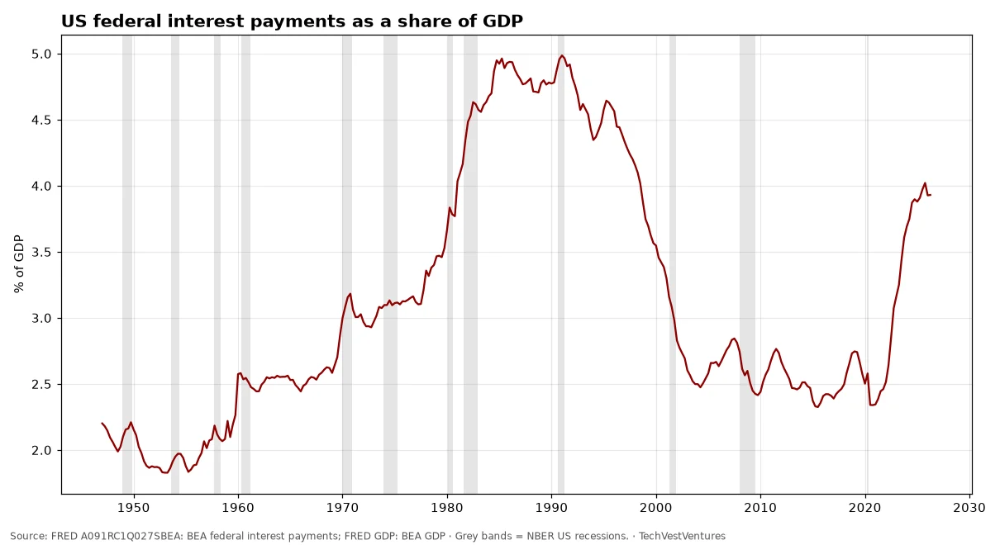
Federal government interest payments (annualized) were 3.93% of GDP in Apr 2026, compared with a previous peak of 4.99% in Jan 1991 and a low of 2.33% in Jul 2015.
Sources: FRED A091RC1Q027SBEA: BEA federal interest payments FRED GDP: BEA GDP
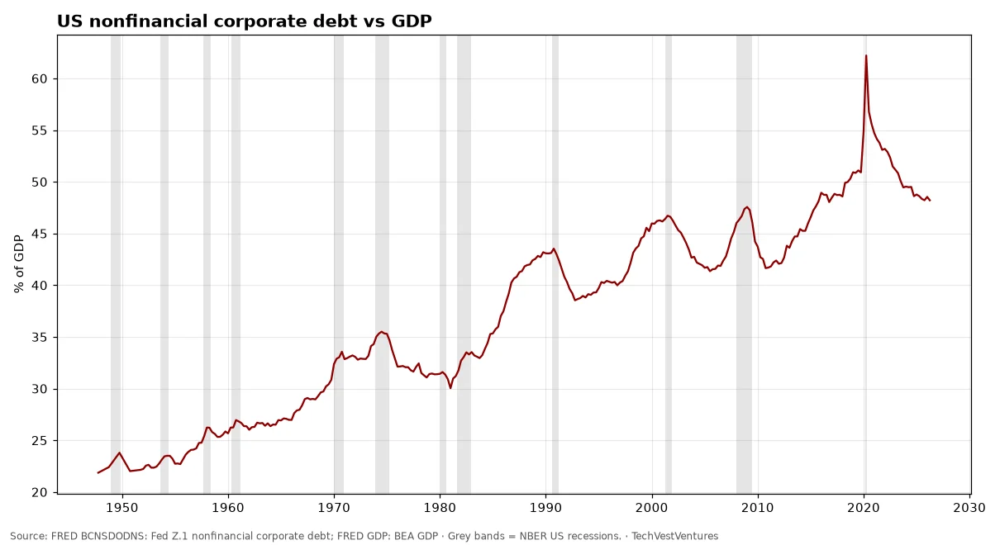
Debt securities and loans of nonfinancial corporations equalled 48% of GDP in Apr 2026; record 62% (Apr 2020). Previous local peaks in 1990, 2001, 2009 and 2020 coincided with recessions.
Sources: FRED BCNSDODNS: Fed Z.1 nonfinancial corporate debt FRED GDP: BEA GDP
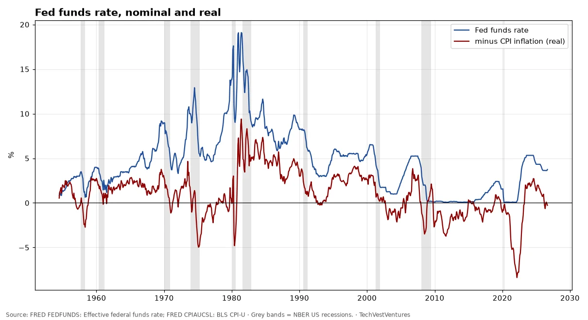
Effective fed funds rate 3.75% in Sep 2026; minus CPI inflation of 4.0% y/y gives a real rate of -0.3%. Real rates were deeply negative in 2021–22 (low -8.4% in Mar 2022, overall series low) and in the 1970s.
Sources: FRED FEDFUNDS: Effective federal funds rate FRED CPIAUCSL: BLS CPI-U
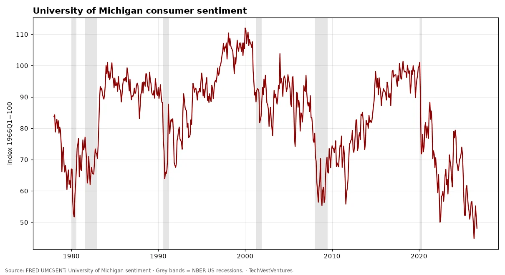
Sentiment was 48.1 in Sep 2026; record low 44.8 in May 2026. Readings this low have mostly coincided with recessions or inflation shocks (1980, 2008, 2022).
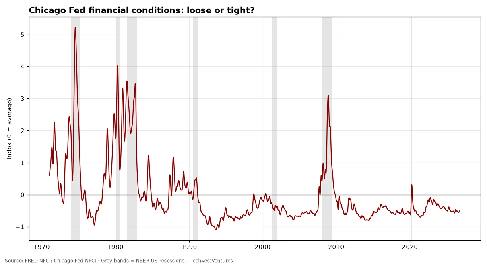
National Financial Conditions Index -0.50 on Oct 16, 2026; negative means looser than average. Stress spikes: 5.23 in Jul 1974, 3.11 in Nov 2008, 0.31 in 2020.
Sources: FRED NFCI: Chicago Fed NFCI
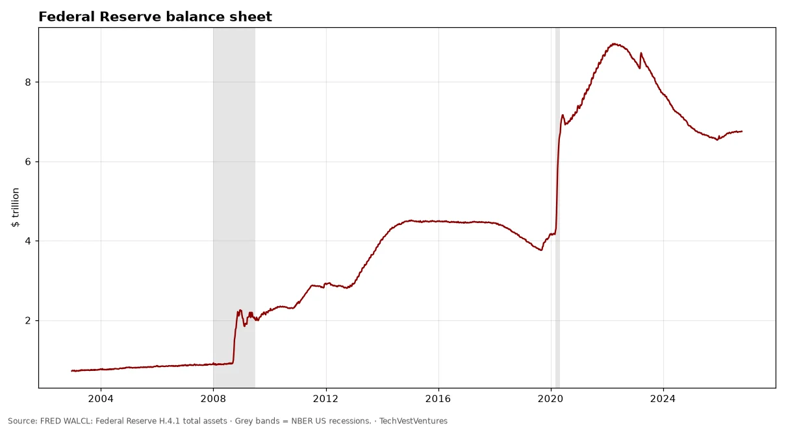
Fed total assets $6.75 trillion on Oct 21, 2026, down from a peak of $8.97 trillion in Apr 2022 and up from $0.72 trillion in 2002.

The Great Depression drop (-54% by Jul 1932) dwarfs every later slump: 1938 (-32%), 1945 demobilization (-35%), 2009 (-17%) and 2020 (-19%). Latest: 0.1% below the prior peak in Sep 2026. One true depression in a century of data is too few to model its return.
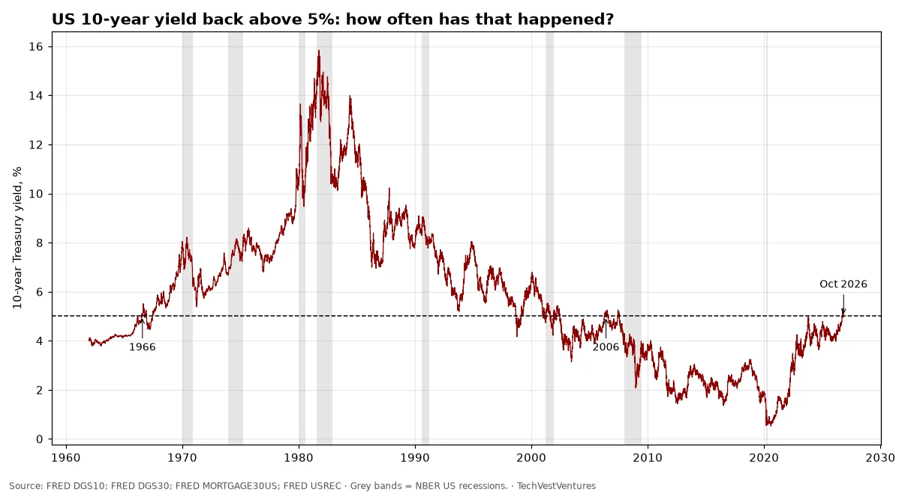
The 10-year Treasury closed at 5.13% on Oct 21 and 4.96% on Oct 22, after first crossing 5% in mid-September; the 30-year is 5.29% and the 30-year mortgage rate 7.32%. Cycle count: since 1962, the 10-year has risen through 5% after at least 12 months below it only twice before, in July 1966 (followed by a 15-year bond bear market and the 1969-70 recession) and May 2006 (followed by the 2008 recession). That is 2 precedents, fewer than the 3+ repeats Michael Hentschel requires, so 'every time yields cross 5%, a recession follows' is a stab in the dark, not a pattern.
Sources: FRED DGS10 FRED DGS30 FRED MORTGAGE30US FRED USREC
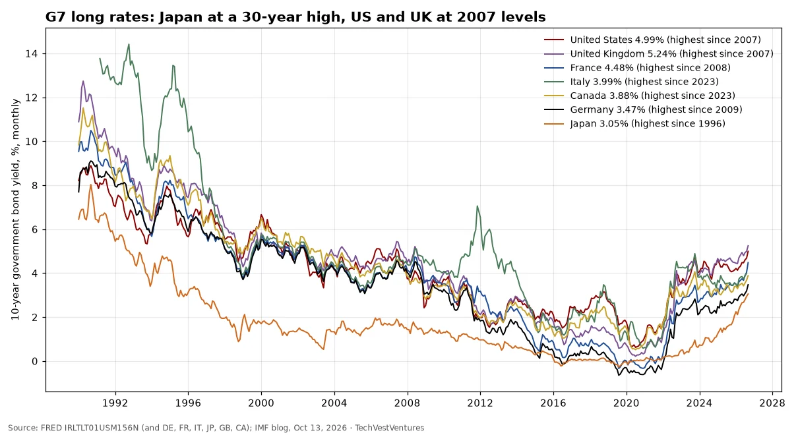
Monthly 10-year government bond yields (OECD via FRED), latest Sep 2026 (Italy Aug). Japan's 3.05% is the highest since 1996; the UK's 5.24% and the US 4.99% are the highest since mid-2007; France since 2008 and Germany since 2009. The IMF's Oct 13 blog says the G7 average 10-year yield is the highest in nearly two decades and warns of the fiscal stakes. Cycle count: since 1990 the US 10-year has made three major cyclical peaks (late 1994, early 2000, mid-2007); two were followed by a US recession within about 1-2 years (2001, 2008-09) and one by a soft landing (1995). Three cycles with a 2-of-3 hit rate is right at Michael Hentschel's threshold, so read it as a warning, not a prediction.
Sources: FRED IRLTLT01USM156N (and DE, FR, IT, JP, GB, CA) IMF blog, Oct 13, 2026

The Kim-Wright 10-year term premium (Fed Board model) is the extra yield investors demand to lock money up for ten years instead of rolling short bills. It stood at 0.99 pts on Oct 16, 2026; October's monthly average (1.06) is the highest since April 2010, after averaging below zero in 2019-2021. A rising premium means long rates are climbing for reasons other than expected Fed policy: supply of Treasuries, inflation risk and doubts about fiscal discipline. Cycle count: the premium fell through most of 1990-2020, a single secular decline, so there is no multi-cycle base for predicting what level it 'should' reach. Treat it as a gauge, not a forecast.
Sources: FRED THREEFYTP10 (Kim-Wright term premium) FRED USREC

Equities hit 48.2% of US household financial assets in Q2 2026, a record. Source: Federal Reserve Z.1.
Data
- Q2 2026 (Data): 48.2%, the highest since the series began in 1945 (Q1 2026: 44.7%).
- Q4 2021 (Data): 41.0%, the previous post-2000 high.
- Q1 2000 (Data): 38.7%, the dot-com peak.
- Q4 1968 (Data): 30.0%, the 1960s peak.
Sources: FRED BOGZ1FL153064486Q (Fed Z.1) FRED USREC (NBER recessions)
Viral Oct 26, 2026 claim. The S-1 shows most of the loss was a non-cash charge.
Claim checked against Data
- Oct 26, 2026 (Claim): Rand Group posted that Anthropic 'lost $81B in six months'.
- Oct 27, 2026 (Data): Fortune says about $72B was a non-cash charge; the operating loss was $693M.
Doubt: the headline number is mostly an accounting charge, not cash burned. Rand later called it 'mostly paper' in replies.
Rebuttal: Fortune, Oct 27, 2026: Anthropic S-1 and the $81B loss
Original post: Rand Group, Oct 26, 2026
Sources: Fortune, Oct 27, 2026
Rand Group claim. IMF data put the dollar at 56.7% of allocated reserves.
Claim checked against Data
- Oct 2026 (Claim): Rand Group said the dollar is down to about 40% of world reserves.
- Sep 30, 2026 (Data): IMF COFER puts the dollar at 56.7% of allocated FX reserves.
Doubt: the 40% figure does not match IMF data, and we could not find the original post or its source.
Rebuttal: IMF data brief, Sep 30, 2026
Sources: IMF data brief, Sep 30, 2026

The 26-week average of US initial jobless claims was -10.6% versus a year earlier in the week of Oct 17, 2026 (194K claims that week), far from the +20% line. Repeat count: in all 8 recessions since 1969 the gauge crossed +20% (8 of 8), with 0 false alarms. But it crossed before the recession began in only 1 of 8 (2001, by about a week). Months from recession start to crossing: 1970 +3, 1973 +4, 1980 +2, 1981 +7, 1990 +5, 2001 -0, 2008 +7, 2020 +1. Eight repeats make this a well-supported pattern, but as a coincident signal, not a forecast. Today's reading says no recession has started; it cannot say none is coming.
Sources: FRED ICSA: DOL initial claims, seasonally adjusted (weekly) FRED USREC: NBER recession indicator NBER business cycle dates
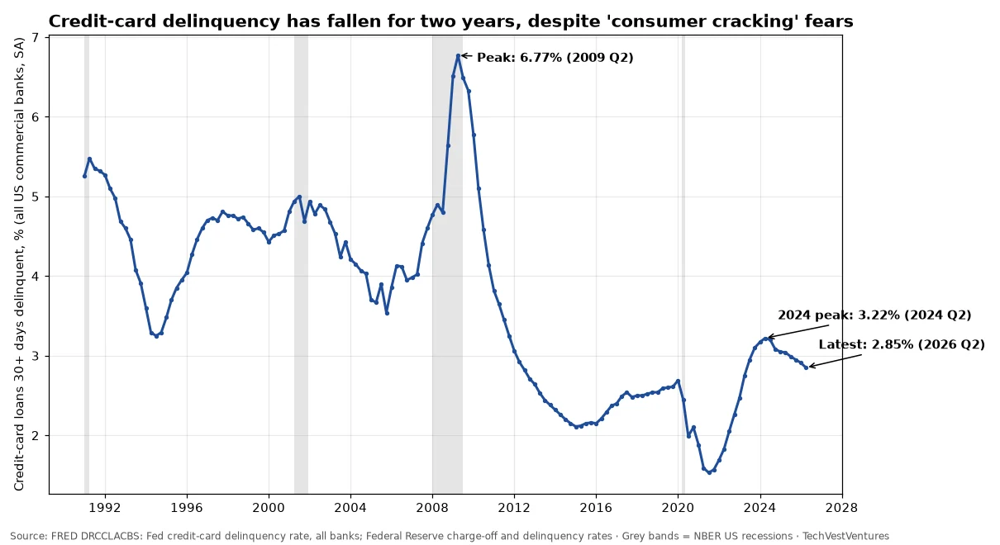
Delinquency on US bank credit-card loans was 2.85% in Q2 2026, the eighth straight quarterly decline from 3.22% in Q2 2024. It is still above the 2019 level (about 2.6%) but far from the 6.77% peak of 2009. Repeat count: a run-up of half a point or more preceded or accompanied recessions only twice since 1991 (2001 coincident, 2008 about 18 months early). The 2021-24 rise of 1.7 points produced no recession. With 2 hits and 1 large false alarm, using this as a recession signal is a stab in the dark. It says card stress is easing, not that a recession is near.
Sources: FRED DRCCLACBS: Fed credit-card delinquency rate, all banks Federal Reserve charge-off and delinquency rates
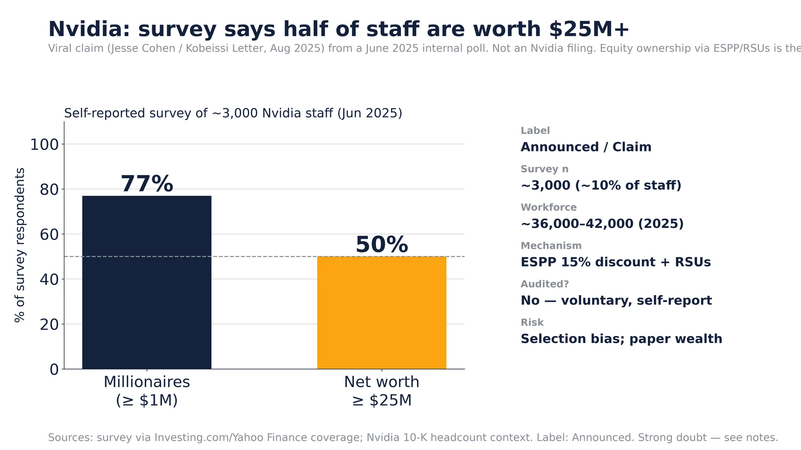
Jun 2025 voluntary survey (~3,000 staff): ~77% millionaires, ~50% ≥$25M. Announced claim, not a filing.
Announced
- Jun 2025 (Announced): voluntary survey of ~3,000 Nvidia employees (~10% of workforce) reported 76–78% millionaires and ~50% with net worth ≥ $25M (Jesse Cohen / Kobeissi Letter coverage).
- Mechanism (Data): Nvidia ESPP offers ~15% discount with lookback; RSUs vest over time — equity, not cash salary, drives the wealth.
- Workforce (Data): Nvidia disclosed ~36k–42k employees across 2025 commentary; applying 50% to the full headcount is an extrapolation, not a census.
- Omitted: no company 10-K or proxy statement confirms the 50% / $25M figure.
Self-selection bias likely inflates the share (wealthier staff may be likelier to answer). Much of the wealth is unrealised stock; a large NVDA drawdown would cut paper net worth. Do not treat as audited Data.
Rebuttal: Yahoo Finance / coverage of Nvidia employee wealth survey
Original post: Michael A. Arouet, Nov 2026
Sources: Yahoo Finance: Nvidia producing unprecedented employee wealth Indian Express: Jensen Huang salary reviews / staff wealth context

Speculation: €1.85M tax > €1.5M profit on a €25M firm. Data: US equities 31% of assets vs deposits 10% (Fed Q2 2025).
Speculation + Data
- Speculation (Arouet comic): €1.5M profit, 40% income tax (€0.6M), 5% wealth tax on a €25M valuation (€1.25M) → combined tax €1.85M exceeds profit.
- Q2 2025 (Data): Fed Z.1 B.101.e — US household corporate equities (direct+indirect) $61.1T = 31.0% of total assets; currency & deposits $19.7T = 10.0%.
- Q2 2026 (Data): FRED BOGZ1FL153064486Q — equities 48.2% of US household financial assets (record).
- Argument that holds in Data: a large share of household wealth is in shares/business equity, so a wealth tax often requires selling or borrowing against illiquid assets. The comic’s 5% rate and forced closure are Speculation, not a calibrated policy simulation.
The 5% rate and €25M valuation are illustrative, not an enacted tax. Real wealth-tax designs (e.g. Spain, Norway, historical French ISF/IFI) use lower rates, exemptions and liquidity carve-outs. Do not read the comic as a forecast of any specific bill.
Rebuttal: Fed Z.1 B.101.e: Balance Sheet of Households and Nonprofit Organizations
Original post: Michael A. Arouet, Nov 2026
Sources: Fed Z.1 B.101.e (Sep 11, 2025 release) FRED BOGZ1FL153064486Q (equities share of household financial assets) Fed Survey of Consumer Finances materials

The S&P 500 closed at 7,376.86 on Friday Nov 6, down 2.68% on the week (from 7,580.07 on Oct 30) and 5.65% below its Oct 6 closing high of 7,818.93. Thursday Nov 5 alone was -4.36% (7,688.62 to 7,353.73), and the VIX closed at 25.64 on Nov 6 after 28.18 on Nov 5. Repeat count: of 74 completed S&P pullbacks of 5% or more since 1950, 26 (35%) eventually reached 10% and 11 (15%) reached 20%, a bear market. That is far more than three repeats, so the pattern is real: a 6% S&P dip becoming a bear market is the minority outcome (about 1 in 7). Calling this ‘just like 2000 or 2007’ from a 6% decline would be a stab in the dark. High-yield credit is not confirming a crash: the ICE BofA HY OAS went from 3.14 on Oct 28 to 3.48 on Nov 5, a rise of only 34 basis points.
- Week through Nov 6: S&P -2.68% to 7,376.86; Nasdaq -3.37%; SOX -12.15%; VIX 25.64.
- From the Oct 6 closing highs: S&P -5.65%; Nasdaq -10.94% (a correction); SOX -29.0%.
- Postwar repeat count: 11 of 74 completed 5%+ S&P pullbacks reached 20% (15%).
- HY OAS 3.14 → 3.48 (Oct 28 to Nov 5); credit did not spike with equities.
Sources: Yahoo Finance ^GSPC daily (S&P 500, 1927–Nov 6, 2026) Yahoo Finance ^IXIC daily (Nasdaq Composite) Yahoo Finance ^SOX daily (PHLX Semiconductor) Yahoo Finance ^VIX daily FRED SP500 (last print Nov 5: 7353.73, matches Yahoo) FRED NASDAQCOM FRED VIXCLS FRED BAMLH0A0HYM2 (ICE BofA US High Yield OAS)

From the Oct 6 closing highs through Friday Nov 6, the PHLX Semiconductor Index fell 29.0% (13,217.82 to 9,390.25), the Nasdaq Composite fell 10.94% — already a correction — and the S&P 500 fell 5.65%. Nvidia -22.0%, Alphabet -18.1% and Meta -17.4% led the Mag7 decline from those highs; Tesla was -5.9%. Apple +2.6%, Amazon +1.2% and Microsoft +0.2% rose or were flat. Meta’s decline was almost entirely before Oct 28 (738.88 on Oct 6 to 612.49 on Oct 28); from Oct 28 to Nov 6 it changed by only -0.4%. The week through Nov 6 itself was S&P -2.68%, Nasdaq -3.37% and SOX -12.15%, matching the tape; Thursday’s session was SOX -12.25%. From its June 22 closing high of 14,634.72, SOX is -35.8%. Repeat count: SOX has completed 6 declines of 30% or more since 1994 (out of 57 completed 5%+ pullbacks), so chip bear phases do repeat, but they are uncommon. This open episode would be another if the June high is not recaptured.
- Oct 6 → Nov 6: SOX -29.0%; Nasdaq -10.94%; S&P -5.65%.
- Nvidia -22.0%, Alphabet -18.1%, Meta -17.4%; Tesla -5.9%; Apple +2.6%, Amazon +1.2%, Microsoft +0.2%.
- SOX -35.8% from its June 22 high; 6 completed 30%+ SOX drops since 1994 (n=57 five-percent pullbacks).
- Nasdaq’s open drawdown (-10.9%) already meets the usual 10% ‘correction’ line.
Sources: Yahoo Finance ^SOX history Yahoo Finance ^IXIC history Yahoo Finance ^GSPC history Yahoo Finance NVDA history Yahoo Finance GOOGL, TSLA, AAPL, MSFT, META, AMZN history FRED NASDAQCOM (Nov 6 close 24579.42, matches Yahoo)

Sep 30–Nov 10, 2026 closes: S&P 500 −1.7%, Intel −51.7%, 34 of worst 50 tech. Yahoo Finance.
Data
- Sep 30–Nov 5, 2026 (Data): TVV re-ran Rand’s window on 502 current members. 48 of Rand’s 50 figures match within 0.1 pt: Intel −56.5%, Marvell −49.5%, Seagate −49.4%.
- Nov 5, 2026 (Data): 35 of the worst 50 are Information Technology, as Rand says. Sandisk was −53.7% (Rand −51.2%) and Super Micro −34.1% (Rand −34.8%).
- Nov 5, 2026 (Data): S&P 500 index −3.9%. Members’ combined market cap −4.6% at current Yahoo share counts (TVV approximation), against Rand’s −3.7%.
- Sep 30–Nov 10, 2026 (Data): S&P 500 −1.7%, equal-weight RSP +6.2%, median member +8.6%, and 76% of members are up.
- Nov 10, 2026 (Data): Intel is still the worst at −51.7%, then Sandisk −50.6% and Seagate −45.6%. 34 of the worst 50 are tech, and the bottom-50 cutoff is −14.0%.
- Method: one line per company (second share classes GOOG, FOX and NWS dropped). Members and sectors come from the Wikipedia S&P 500 list as of Nov 10, which may differ slightly from Rand’s list.
Rand says the index average “can hide a lot of damage.” That is true for chips and hardware, but the typical S&P 500 stock rose: the median member gained 7.1% to Nov 5 and 8.6% to Nov 10, and the equal-weight index is up 6.2%. The damage is concentrated, not broad.
Rebuttal: Yahoo Finance RSP (S&P 500 equal-weight) history
Original post: Rand Group, Nov 2026
Sources: Yahoo Finance ^GSPC daily (S&P 500) Yahoo Finance RSP history (S&P 500 equal-weight) Yahoo Finance INTC history Wikipedia: List of S&P 500 companies (members and sectors as of Nov 10, 2026) S&P Dow Jones Indices: S&P 500 Original post: Rand Group, Nov 2026

Nov 10, 2026 close vs all-time closing high: WYFI −79.4%, CRWV −73.5%, NBIS −53.3%. Yahoo Finance.
Data
- Nov 10, 2026 (Data): fall from all-time closing high: WYFI −79.4% (peak Jun 22, 2026), CIFR −77.6% (Jun 18, 2026), IREN −74.2% (Nov 5, 2025), CRWV −73.5% (Jun 20, 2025), APLD −66.4% (May 28, 2026).
- Nov 10, 2026 (Data): HUT −57.3% (peak Jun 2, 2026), WULF −56.7% (Jun 18, 2026), DOCN −56.1% (Jun 15, 2026), NBIS −53.3% (Jun 18, 2026).
- Rand vs TVV (Data): WYFI and CIFR are within 2 pts. Rand understates IREN (−69% vs −74.2%) and CoreWeave (−66% vs −73.5%), and overstates APLD, HUT, WULF, DOCN and NBIS by 3–6 pts. Rand gives no date or method.
- Context (Data): against the Dec 31, 2024 close, the seven names with that history are still up 41% (CIFR) to 384% (NBIS). HUT, WULF, DOCN and NBIS are also up in 2026 so far.
- Timing: CoreWeave’s Q3 results were scheduled after the Nov 10 close, so this chart uses pre-results prices.
- Method: WULF is measured from TeraWulf’s first trading day (Dec 14, 2021). Yahoo’s older WULF prices belong to predecessor IKONICS and would overstate the drop.
Peak-to-now drawdowns make “trade of the decade” look broken, but most of these peaks were short mid-2026 spikes, and longer-run holders are still well ahead. Rand’s nine figures don’t match the closes on any single date, so treat its exact percentages as approximate. This chart predates CoreWeave’s Q3 results, which were scheduled after the Nov 10 close.
Rebuttal: Yahoo Finance NBIS history
Original post: Rand Group, Nov 2026
Sources: Yahoo Finance CRWV history Yahoo Finance NBIS history Yahoo Finance IREN history Yahoo Finance WYFI history Yahoo Finance CIFR history Yahoo Finance WULF history CoreWeave investor relations Original post: Rand Group, Nov 2026
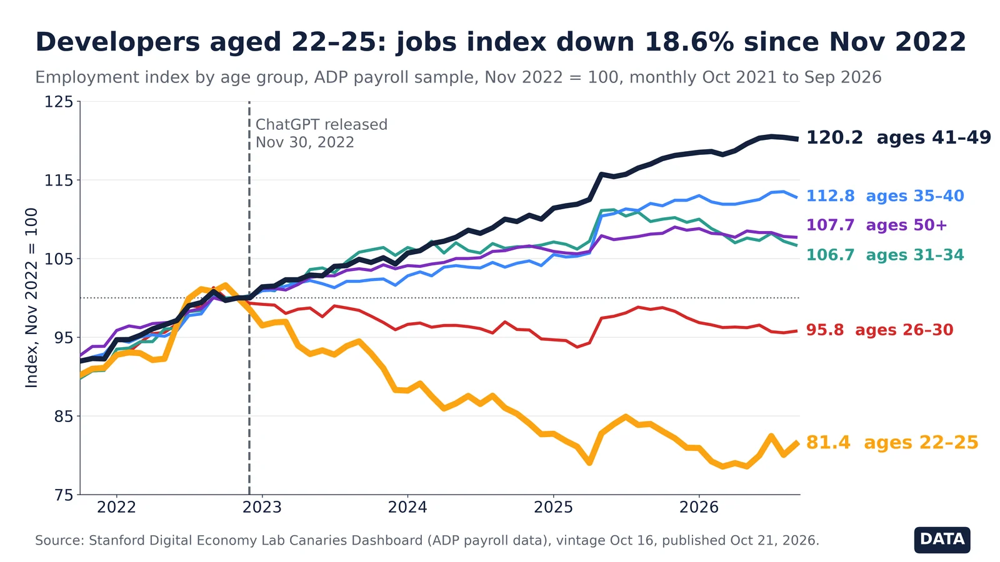
Sep 2026: developers aged 22–25 at 81.4, aged 41–49 at 120.2 (Nov 2022=100). Stanford Canaries, ADP.
Data
- Sep 2026 (Data): Stanford Canaries software-developer index (Nov 2022 = 100): ages 22–25 81.4, 26–30 95.8, 31–34 106.7, 35–40 112.8, 41–49 120.2, 50+ 107.7.
- Sep 2026 (Data): all five of Rand’s figures match Stanford’s published file exactly. Rand leaves out the 50+ group.
- Mar 2026 (Data): ages 22–25 hit a low of 78.6. That index peaked at 101.6 in Oct 2022, one month before ChatGPT’s release.
- Sep 2026 (Data): across all occupations, ages 22–25 stand at 97.1, so the drop is concentrated in software work, not young workers overall.
- Method (Data): a five-year balanced sample of ADP payroll firms (25,000 firms and 4.6M matched workers at launch). Updated monthly, latest Oct 21, 2026.
Rand’s headline says “1 in 5 junior dev jobs gone since ChatGPT.” Stanford says the dashboard shows correlation, not a causal link, and that earlier declines are likely non-AI. The fixed firm panel leaves out new firms, and the index tracks fewer young hires, not jobs destroyed. All six age series also jump together in May 2025, which may be a sample effect.
Rebuttal: Yale Budget Lab: Evaluating the impact of AI on the labor market
Original post: Rand Group, Nov 2026
Sources: Stanford Digital Economy Lab: Canaries dashboard Stanford Canaries software-developer results (zip) Stanford Canaries by-age results (zip) Stanford Canaries August 2026 memo (PDF) Yale Budget Lab: Evaluating the impact of AI on the labor market Original post: Rand Group, Nov 2026
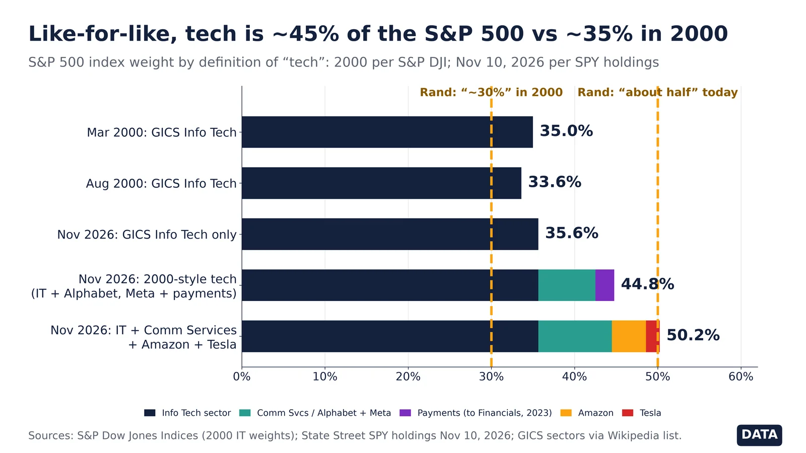
Nov 10, 2026: Info Tech 35.6%, broad tech 50.2%; 2000 IT peak 33.6–35%. SPY holdings, S&P DJI.
Data
- Nov 10, 2026 (Data): the GICS Information Technology sector alone is 35.6% of the S&P 500 (SPY daily holdings). Add Communication Services 8.8%, Amazon 4.1% and Tesla 1.6% and broad tech reaches 50.2%.
- Mar and Aug 2000 (Data): S&P Dow Jones Indices puts IT at 35% of the index in March 2000 and 33.6% in August 2000. Rand’s “around 30%” understates the dot-com peak.
- Like-for-like (Data, TVV reclassification): Alphabet and Meta were IT until 2018, and Visa, Mastercard and other payments firms until 2023. Adding them back (6.9% + 2.3%) gives 44.8% against 33.6–35% in 2000.
- Jul 2026 to Nov 2026 (Data): CME Group put IT at about 39% in July 2026. It has dropped to 35.6% after the Q4 chip and hardware sell-off (see M47).
- Nov 10, 2026 (Data): the 10 largest holdings make up 37.1% of the index (counting Alphabet’s two share classes separately), which supports Rand’s concentration point.
- Omitted: the Bloomberg sector series in Rand’s chart (paywalled) and a 2000 “broad tech” figure, because no primary 2000 weights for those groups were found.
Rand gets to “half vs 30%” by mixing definitions: a broad tech basket today against a narrower 2000 figure. On the same GICS IT definition, today’s 35.6% is about level with the 2000 peak. On a like-for-like 2000-style definition it is about 45%, 10 points higher, not 20.
Rebuttal: S&P DJI Indexology: These go to 11 — diversification with S&P 500 sectors
Original post: Rand Group, Nov 2026
Sources: SSGA: SPDR S&P 500 ETF Trust (SPY) SSGA: SPY daily holdings (xlsx) S&P DJI Indexology: These go to 11 — diversification with S&P 500 sectors S&P Global: Not your father's tech sector CME Group: What past sector concentrations tell us about today's tech-heavy S&P 500 Wikipedia: List of S&P 500 companies MSCI: Global Industry Classification Standard (GICS) Original post: Rand Group, Nov 2026

Nov 11, 2026 close: NVDA 22.0x trailing GAAP EPS, lowest since Mar 2019; peak 253x. Yahoo, SEC EDGAR.
Data
- Nov 9, 2026 (Data): NVDA closed at 22.6x trailing four-quarter GAAP diluted EPS, exactly Rand’s figure. It was 21.4x on Nov 10 and 22.0x on Nov 11 ($173.73; trailing EPS $7.91).
- Since 2019 (Data): the last time the multiple was this low was Mar 7, 2019 (22.5x). Rand says May 2019, a gap probably due to dating EPS at quarter-end rather than at the filing date, which TVV uses.
- Jul 18, 2023 (Data): the peak was 252.6x, so Rand’s “most people loved it at 200x” is right in scale.
- 2018–19 (Data): the last time the multiple was this low, trailing EPS then fell 48% in a year (Oct 2018 to Oct 2019, crypto glut). A low trailing P/E can come just before earnings fall.
- Nov 17, 2026: NVIDIA reports Q3 FY2027 results. The trailing EPS will reset then, and the multiple will move even if the price does not.
- Correction to the brief: Rand’s chart is trailing GAAP, not forward. Forward consensus history is not public, so no forward P/E is shown (omitted). Pairs with M48 (neo-cloud drawdowns).
“Cheapest since 2019” uses trailing earnings during a steep profit ramp, so the multiple falls fast by construction. The 2019 low came just before a 48% earnings drop. Whether 22x is cheap depends on forward earnings holding up, which this chart cannot show. Rand’s dates also differ slightly from TVV’s (May 2019 vs Mar 2019).
Rebuttal: NVIDIA: conference call for third-quarter financial results
Original post: Rand Group, Nov 2026
Sources: Yahoo Finance NVDA history SEC EDGAR XBRL company facts, NVIDIA (CIK 0001045810) SEC EDGAR: NVIDIA 10-Q filings NVIDIA investor relations: financial reports NVIDIA: conference call for third-quarter financial results Original post: Rand Group, Nov 2026
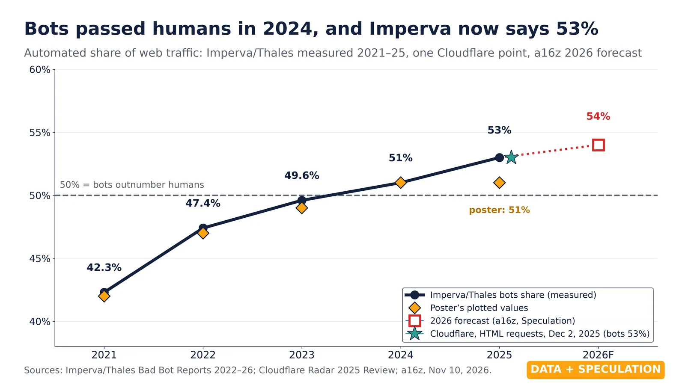
Bots were 51% of web traffic in 2024 and 53% in 2025 (Imperva); 54% in 2026 is a forecast.
Data + Speculation
- 2021–2024 (Data): Imperva’s Bad Bot Reports put automated traffic at 42.3% (2021), 47.4% (2022), 49.6% (2023) and 51% (2024). The poster’s 42, 47, 49 and 51 match.
- 2025 (Data): Thales/Imperva’s 2026 report says 53% of 2025 traffic was automated (40% bad bots, 13% benign) and 47% human. The poster shows 51% for 2025, repeating 2024 and understating by 2 points.
- Dec 2, 2025 (Data): Cloudflare’s 2025 review has humans at 47% of HTML requests, non-AI bots 44%, AI bots 4.2% (average) and Googlebot 4.5%, so 53% automated, the same as Imperva.
- Jun and Oct 2026 (Data, reported by third parties): Cloudflare Radar showed 57.4% bots for HTML requests in the week to Jun 5, and about 39.5% of all HTTP requests in early Oct. Not plotted: depends on what is counted.
- 2026 (Speculation): the 54% is a16z’s own forecast, only 1 point above Imperva’s 2025 figure. a16z’s “agents are the majority” claim rests on this all-bots series, not on AI agents; DataDome puts AI at 1.7% of requests (Jun 2026).
- Omitted: the NP Digital, Soax and Security Magazine inputs to the poster’s series (no primary series found).
“Bots” here include search crawlers, scrapers and fraud bots, not just AI agents. Vendors also measure different traffic: Imperva counts its customers’ traffic, Cloudflare counts HTML requests, and DataDome finds about 26.5% after filtering. The majority-bots claim holds on two big vendors but is not a single agreed number.
Rebuttal: PPC Land: a16z says firms must court AI agents
Original post: Rand Group, Nov 2026
Sources: Imperva Bad Bot Report 2022 Imperva Bad Bot Report 2023 Imperva Bad Bot Report 2024 Imperva Bad Bot Report 2025 Thales/Imperva Bad Bot Report 2026 Cloudflare Radar 2025 year in review a16z: Welcome to the B2A economy LLMs.blog: a16z on agents as majority of web traffic W3C: State of the web in the AI era (Oct 2026) Signal Bridge Data: bot traffic report 2026 PPC Land: a16z says firms must court AI agents Original post: Rand Group, Nov 2026

Nov 12, 2026 close: NVDA 10.5x next-FY EPS, 17.8x current-FY; S&P 500 18.3x forward. Yahoo, FactSet.
Data + Projection
- Nov 11–12, 2026 (Data): NVIDIA’s 8-K says Jensen Huang resigned as president, CEO and director effective Nov 11. CFO Colette Kress is interim CEO and keeps the CFO role. The “BREAKING” post is real.
- Oct 6 to Nov 12 (Data): NVDA’s record close was $239.24 on Oct 6. It closed $173.73 on Nov 11, opened $151.01 on Nov 12 (low $148.80) and closed $166.19, 30.5% below the record.
- Nov 12 (Data): Rand’s 9.6x is $152 (an intraday price, not a close) over next-fiscal-year consensus EPS of $15.85. At the $166.19 close it is 10.5x.
- Nov 12 (Data): on current-fiscal-year EPS ($9.32) NVDA is 17.8x, about level with the S&P 500. The “cheaper than the market” claim holds only on next-year EPS.
- Nov 12–13 (Data): FactSet’s S&P 500 forward 12-month P/E was 17.7x on Nov 5 (Rand’s number) and 18.3x in the Nov 13 report. FactSet blends the next 12 months, not a fiscal year.
- Peers (Data): on Yahoo consensus at the Nov 12 close, next-FY P/E is MSFT 21.6x, AMZN 25.0x, MCD 20.0x. Rand’s peer figures appear to mix bases (MSFT near trailing, AMZN and MCD near next-FY) and do not reconcile on one basis.
- M52 link (Data): trailing GAAP P/E was 22.0x on Nov 11 and is 21.0x at the Nov 12 close ($7.91 trailing EPS). Forward and trailing multiples are different measures.
- Nov 17, 2026 (Projection): NVIDIA reports Q3 FY2027 results at 5 p.m. ET, the first under an interim CEO. The Kalshi 40% odds for Kress are not verified and are not plotted.
“Cheaper than the S&P 500” rests on FY2028 consensus EPS, 15 months out and up 70% on this year’s, set before the CEO change. On this year’s EPS Nvidia is level with the market. Forward consensus history is not public, so no time series is shown.
Rebuttal: NVIDIA: conference call for third-quarter financial results
Original post: Rand Group, Nov 2026
Sources: NVIDIA News: CEO transition SEC EDGAR: NVIDIA 8-K dated Nov 11, 2026 TechCrunch: NVIDIA’s Jensen Huang resigns; CFO Colette Kress named interim CEO NVIDIA: conference call for third-quarter financial results FactSet Insight: lowest forward 12-month P/E ratio for the S&P 500 in more than 3 years FactSet Earnings Insight, Nov 13, 2026 (PDF) Yahoo Finance NVDA analysis (consensus EPS) Yahoo Finance NVDA history Original post: Rand Group, Nov 2026

Monthly gap between yields on Moody's seasoned Baa (lowest investment-grade) corporate bonds and the 10-year Treasury, January 1962 – October 2026 (FRED). At 1.46 percentage points in October 2026 (1.48 on Nov 12, daily series), the spread is tighter than in 80% of months since 1962 and 98% since 1990, even with the 10-year Treasury above 5%. Investors are demanding little extra yield for corporate credit risk. Pattern test: since 1962 the spread first fell to 1.6 pp or below in 8 separate episodes (red dots, at least two years apart). A recession followed within two years in 2 of them (1972, 1988) and within three years in 4; the spread widened by 0.5 pp or more within two years in 3. With 2 hits in 8 tries within two years and 4 within three (the 2024 episode's three-year window is not complete), 'tight spreads mean a crash is coming' is closer to a coin flip than a repeating cycle: a stab in the dark on timing.
Data
- Episodes (first month at or below 1.6 pp): Jan 1962 1.00 pp, widened +0.18 pp within 2y; Sep 1972 1.54 pp, widened +0.60 pp within 2y, recession followed; May 1977 1.55 pp, widened +0.08 pp within 2y, recession followed; May 1984 1.33 pp, widened +1.56 pp within 2y; Nov 1988 1.52 pp, widened +0.71 pp within 2y, recession followed; Apr 1994 1.55 pp, widened +0.28 pp within 2y; Mar 2005 1.56 pp, widened +0.30 pp within 2y, recession followed; Feb 2024 1.56 pp, widened +0.34 pp within 2y.
- The current episode began in February 2024. ICE BofA high-yield spread on Nov 12: 3.20 pp; investment-grade spread 0.89 pp (FRED).
- Bear case on X: 'In 2008, credit spreads went from tight to catastrophic in months... tight, complacent, then violent repricing.' Bull case: CCC spreads jumped, yet broad high-yield spreads stayed tight, so stress has not spread.
- The 2005 episode is the warning: the spread stayed tight for over two years before the 2007–09 blowout, longer than the windows tested here.
Sources: FRED: Moody's Seasoned Baa Corporate Bond Yield (BAA), monthly FRED: 10-Year Treasury constant maturity (DGS10), daily, averaged monthly FRED: Moody's Baa yield relative to 10-year Treasury (BAA10Y), daily FRED: NBER recession indicator (USREC) X: 'tight, complacent, then violent repricing' (Michael Gayed, Nov 15) X: CCC spreads jumped but overall high yield still tight (Ryan Detrick chart, Nov 12)
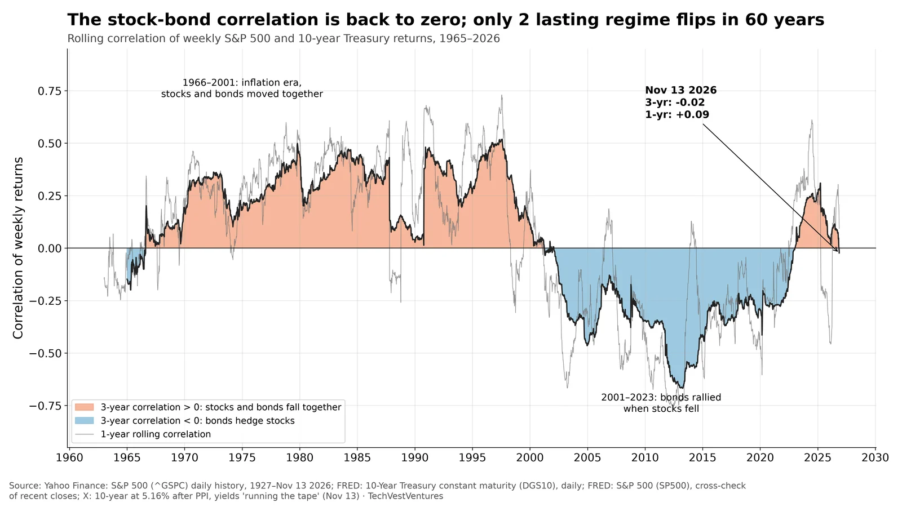
Rolling correlation between weekly S&P 500 returns and weekly 10-year Treasury bond returns (proxied by the fall in the 10-year yield), 1965–2026. Black line and shading: 3-year window; grey: 1-year window. Positive means stocks and bonds fall together, so bonds give no protection in a sell-off; negative means bonds rally when stocks drop. After turning positive in 2023 for the first time since 2001 and peaking at +0.31 in March 2025, the 3-year correlation has drifted back to -0.02 (1-year: +0.09) as stocks hit records while the 10-year climbed past 5%. Cycle count: on a smoothed basis the sign has changed regime only twice in 60 years that lasted more than a year (late 2001 to negative, mid-2023 to positive), plus a brief 1965–66 dip. With two genuine flips, any forecast of the next regime is a stab in the dark.
Data
- Smoothed regime changes (52-week average of the 3-year correlation crossing zero): Dec 1966 to positive, Dec 2001 to negative, Jul 2023 to positive.
- S&P 500 close Nov 13 2026: 7,561.67; 10-year Treasury: 5.10%.
- Why it matters: a 60/40 portfolio relies on negative correlation. When it is positive (1970s, 2022), bonds and stocks lose together.
- Using the yield change as a bond-return proxy ignores coupon income and convexity; it captures direction well at weekly frequency.
Sources: Yahoo Finance: S&P 500 (^GSPC) daily history, 1927–Nov 13 2026 FRED: 10-Year Treasury constant maturity (DGS10), daily FRED: S&P 500 (SP500), cross-check of recent closes X: 10-year at 5.16% after PPI, yields 'running the tape' (Nov 13)
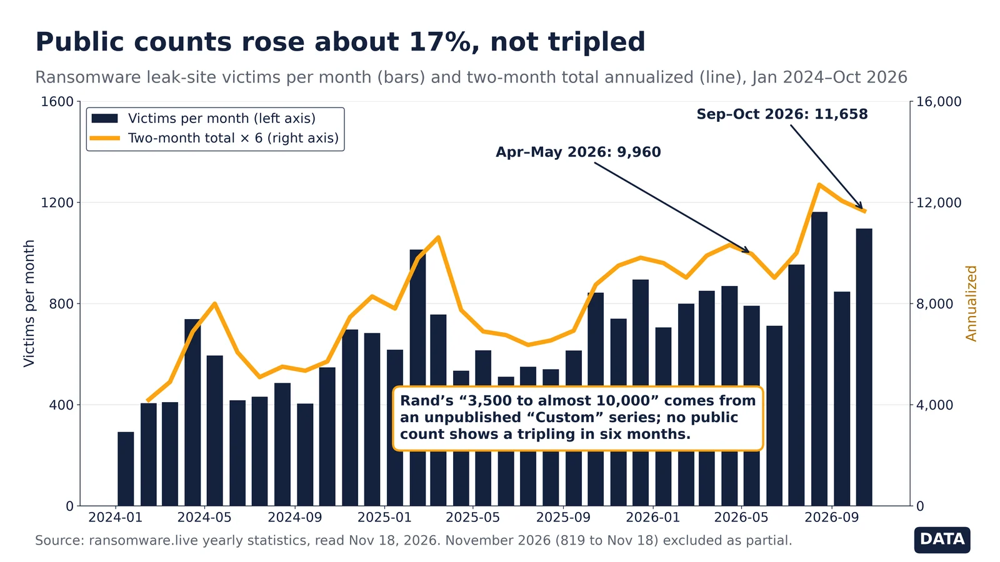
Ransomware leak-site victims annualized: 9,960 (Apr–May) to 11,658 (Sep–Oct 2026), +17%. ransomware.live, Nov 18.
Data
- Nov 17, 2026 (claim): Rand’s chart, “Estimated Total Cyber Incidents, 60-day moving average, annualized”, cites only “Custom”. No data or method is published, so the 3,500 and 10,000 figures cannot be checked.
- Apr–Oct 2026 (Data): ransomware.live counted 869 and 791 leak-site victims in April and May, and 847 and 1,096 in September and October. Two-month totals annualized rise from 9,960 to 11,658, up 17%.
- 2025–2026 (Data): 8,227 victims in all of 2025; 9,604 in 2026 through Nov 18. Counts are rising, but nowhere near threefold in six months.
- Aug–Oct 2026 (Data): Breachsense counts 964, 789 and 953 victims. Trackers differ by month but neither shows a tripling.
- Sep 2026 (Data): Check Point reports 2,803 weekly attacks per organisation, up 48% on a year earlier, and 824 ransomware attacks, up 53%.
- Jun vs Sep 2026 (Data): Epoch AI/Ipsos polls found 46.2% and then 44.6% of US adults reporting a cyber incident in the past year, no detectable rise after Claude Fable 5.
- Omitted: Rand’s own series (unpublished). Leak-site victims are a proxy, not a count of all incidents.
The tripling rests on an unpublished “Custom” estimate. Public series rose, by 17% over the same six months on ransomware.live and 48–53% year on year in Check Point data, not 180% in six months, and an Ipsos poll found no rise in incidents reported by US adults.
Rebuttal: Epoch AI: cyber incidents flat since Claude Fable 5
Original post: Rand Group, Nov 2026
Sources: ransomware.live: 2026 leak-site victim statistics ransomware.live: 2025 leak-site victim statistics ransomware.live: 2024 leak-site victim statistics Breachsense: October 2026 ransomware report Check Point Research: September 2026 cyber threat landscape Epoch AI: cyber incidents flat since Claude Fable 5 Original post: Rand Group, Nov 2026

OpenAI $30bn and Anthropic up to $10bn confirmed; Groq $20bn reported; 219-startup $11bn unverified. Company releases.
Data
- Feb 27, 2026 (Data): OpenAI announced a $110bn round including $30bn from NVIDIA, alongside SoftBank $30bn and Amazon $50bn. Confirmed.
- Nov 18, 2025 (Data): Anthropic announced NVIDIA would invest up to $10bn and Microsoft up to $5bn. Confirmed, but as a ceiling.
- Dec 24, 2025 (Data): Groq announced a non-exclusive licence of its technology to NVIDIA, with its founder and president joining NVIDIA. The $20bn cash price was reported by CNBC from Groq’s lead investor; neither company confirmed it. The FT chart files it as an acquisition, though Groq stays independent.
- 219 startups, $11bn (unverified): the figure comes from Dealroom via the FT. Dealroom’s own State of AI report says NVIDIA rarely discloses its cheque, so it counts rounds rather than summing them; $11bn may be round totals.
- Oct 25, 2026 (Data): NVIDIA held $44.2bn of listed and $65.5bn of private equity stakes, up from $12.9bn and $22.3bn on Jan 25, 2026.
- Jul 26, 2026 (Data): NVIDIA’s 10-Q shows guarantees with maximum exposure of $108.5bn, up from $0.86bn a year earlier. TechCrunch reports $118bn after Q3, not yet in a filing.
The web mixes NVIDIA cheques, a commitment ceiling, a reported licence price and an aggregate that may count whole rounds. Two of the four headline numbers are confirmed by a party to the deal. NVIDIA’s own filings show the exposure is real and larger: about $110bn of stakes plus $108.5bn of guarantees.
Rebuttal: Dealroom: State of AI 2026
Original post: Rand Group, Nov 2026
Sources: OpenAI: Scaling AI for everyone Anthropic: Microsoft and NVIDIA strategic partnerships Groq: non-exclusive inference technology licensing agreement with NVIDIA CNBC: Nvidia-Groq deal structure (Dec 26, 2025) Dealroom: State of AI 2026 NVIDIA: financial results for third quarter fiscal 2027 SEC EDGAR XBRL company facts, NVIDIA (CIK 0001045810) TechCrunch: Nvidia’s startup stakes ballooned to $65B (Nov 17, 2026) Original post: Rand Group, Nov 2026
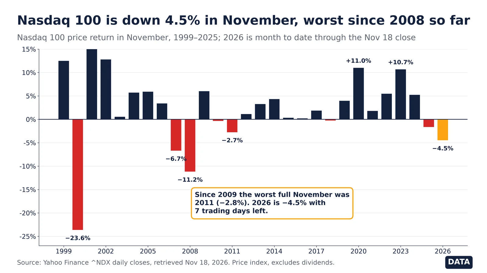
Nasdaq 100 November 2026 to date −4.5% (Nov 18 close), worst since 2008’s −11.2%. Yahoo Finance.
Data
- Nov 18, 2026 (Data): the Nasdaq 100 closed at 27,116.26, down 4.47% from the Oct 30 close of 28,384.85.
- 2009–2025 (Data): the worst full November was 2011 at −2.75%. If the month ended now, 2026 would be the worst since 2008 (−11.17%). Rand’s claim holds so far.
- 2025 (Data): November 2025 was −1.64%, matching the poster’s bar.
- Earlier (Data): 2000 (−23.6%), 1987 (−8.6%) and 2007 (−6.7%) were also worse than 2026 to date.
- Nov 19–30, 2026: seven trading days remain (markets close Thanksgiving, Nov 26), so the ranking can still change.
- Method: price index from Yahoo Finance daily closes; total return including dividends would be slightly higher.
The month is not over. A 1.8% rebound would lift November above 2011’s −2.75% and end the “worst since 2008” framing. The claim is about one calendar month, not a trend.
Rebuttal: Yahoo Finance: Nasdaq 100 (^NDX) history
Original post: Rand Group, Nov 2026
Sources: Yahoo Finance: Nasdaq 100 (^NDX) history Original post: Rand Group, Nov 2026
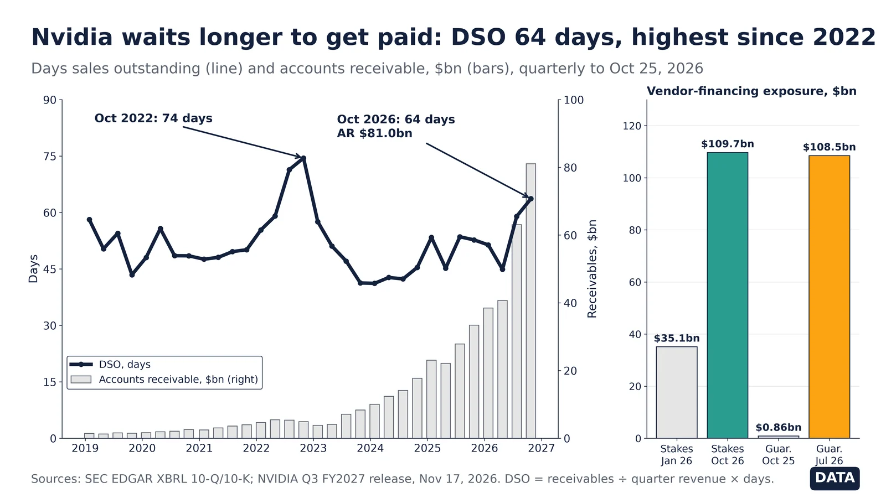
Oct 25, 2026: receivables $81.0bn, 64 days of sales, highest since Oct 2022. NVIDIA, SEC EDGAR.
Data
- Nov 29, 2001 (Data): Standard & Poor’s announced that NVIDIA would replace Enron in the S&P 500 after that day’s close (Nasdaq release; LA Times). The fact holds; the poster’s Nov 30 is the first day of membership.
- Oct 25, 2026 (Data): accounts receivable were $81.0bn, up 28.5% from $63.1bn in July, while quarterly revenue rose 20% to $115.8bn. Days sales outstanding rose to 64 from 59–60.
- 2019–2026 (Data): 64 days is the highest since Oct 2022 (74 days), when gaming inventory was being unwound, and above the 2019–2026 average of about 52.
- Oct 2026 (Data): two direct customers account for 18% and 17% of receivables (CNBC, from NVIDIA’s supplemental data).
- Vendor financing (Data): equity stakes were $109.7bn on Oct 25 (from $35.1bn in January), and guarantees reached a $108.5bn maximum exposure in the July 10-Q (from $0.86bn a year earlier).
- Omitted: any claim of accounting manipulation. Nothing in the filings shows restated revenue; the chart shows disclosed exposure, not fraud.
The Enron comparison implies fake revenue; there is no evidence of that, and NVIDIA discloses its stakes and guarantees. What is real is rising customer financing and slower collection: receivables grew faster than sales, and two customers owe 35% of them.
Rebuttal: NVIDIA: financial results for third quarter fiscal 2027
Original post: Michael A. Arouet, Nov 2026
Sources: Nasdaq via Mondo Visione: NVIDIA replaces Enron in the S&P 500 (2001) Los Angeles Times: Enron replaced in the S&P 500 (Nov 30, 2001) NVIDIA: financial results for third quarter fiscal 2027 SEC EDGAR XBRL company facts, NVIDIA (CIK 0001045810) CNBC: Nvidia earnings report, Q3 fiscal 2027 (Nov 17, 2026) Original post: Michael A. Arouet, Nov 2026
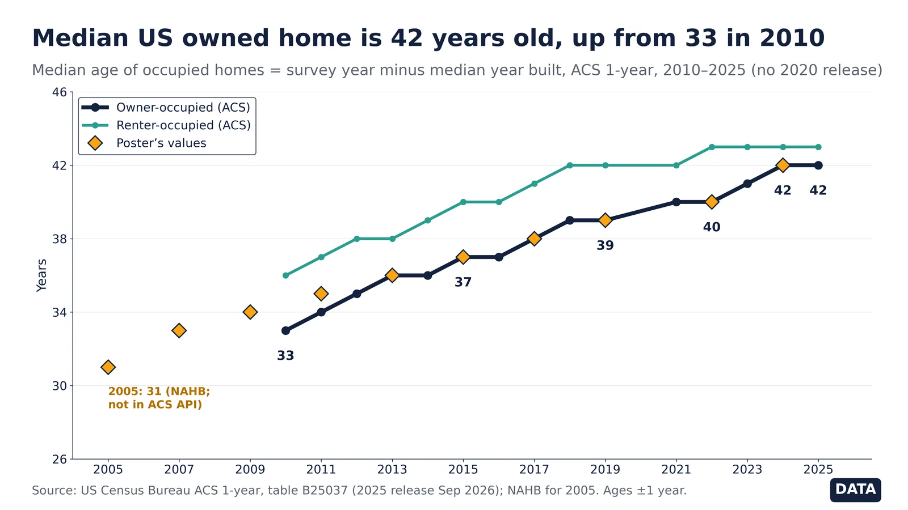
Median owner-occupied US home age: 33 years (2010), 42 (2024 and 2025). Census ACS table B25037.
Data
- 2024 (Data): ACS table B25037 puts the median year built for owner-occupied homes at 1982, so the median age is 42. The poster holds.
- 2010–2022 (Data): median ages of 33 (2010), 36 (2013), 37 (2015), 38 (2017), 39 (2019) and 40 (2022) match the poster. For 2011 ACS gives 34, not 35.
- 2025 (Data): the latest ACS (released Sep 2026) shows 1983, still 42 years. Renter-occupied homes are 43.
- 2005 (Data, secondary): the 31-year figure comes from NAHB’s reading of the ACS. TVV could not retrieve 2005–2009 ACS tables, so 2005–2009 are not plotted.
- 2020–2024 (Data): new construction added about 3.6 million owner-occupied homes, only 4% of the stock (NAHB).
- Method: medians are whole years, so ages are ±1 year. No 2020 ACS 1-year release.
The claim holds. “Dramatic” is a matter of framing: the stock has aged about 0.6 years per year since 2010, and older homes are not necessarily worse homes.
Rebuttal: NAHB: how old is today’s housing stock
Original post: Rand Group, Nov 2026
Sources: US Census Bureau: ACS 2024 1-year, table B25037 US Census Bureau: ACS 2025 1-year, table B25037 NAHB: how old is today’s housing stock Original post: Rand Group, Nov 2026
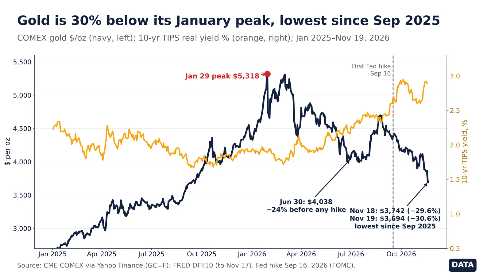
COMEX gold $3,742 on Nov 18, 2026, 29.6% below the Jan 29 peak of $5,318. CME via Yahoo.
Data
- Nov 18, 2026 (Data): COMEX gold settled at $3,742 an ounce, 29.6% below the Jan 29 peak of $5,318 and the lowest since Sep 19, 2025. On Nov 19 it was $3,694, 30.6% below. The post’s “near $3,750, down more than 30%, lowest in over a year” holds.
- Jan 29 to Jun 30, 2026 (Data): gold fell 24% to $4,038 before the Fed’s first hike on Sep 16. The 10-year TIPS yield rose only from 1.89% to 2.20% over that stretch.
- Sep 15 to Nov 18, 2026 (Data): gold fell a further 13.6% as the TIPS yield rose from 2.62% to 2.89% and the 10-year Treasury yield reached 5.10%. The rate story fits this leg.
- Nov 18, 2026 (Data): CME FedWatch put a December hike at about 95–97% (24/7 Wall St, EconoTimes). The dollar index touched its highest since April 2025 (CNBC). These parts of the post are accurate.
- Forecasts (Projection): Goldman cut its end-2026 target to $4,150 and end-2027 to $4,800 (Kitco, Nov 13); UBS cut end-2026 to $4,500 and kept $5,000 for end-2027 (Nov 18). The post’s “$4,650–$4,800” for Goldman 2027 mixes in Goldman’s old end-2026 target.
- Method: COMEX front-month settles, not the LBMA auction price (the LBMA site blocked automated access). UBS quoted a spot low of $3,742 on Nov 18.
The Fed explains the autumn leg, not most of the drop. Gold lost 24% between January and June, months before the first hike, while real yields barely moved; positioning after a record run (UBS’s view) fits that period better.
Rebuttal: finance.yahoo.com: quote/GC%3DF/history
Original post: Michael A. Arouet, Nov 2026
Sources: finance.yahoo.com: quote/GC%3DF/history fred.stlouisfed.org: series/DFII10 fred.stlouisfed.org: series/DGS10 247wallst.com: investing/2026/11/18/traders-now-see-a-9 cnbc.com: 2026/11/18/dollar-holds-near-19-month-hi kitco.com: news/article/2026-11-13/goldman-sachs-cu investing.com: news/commodities-news/why-isnt-gold-rall Original post (X)
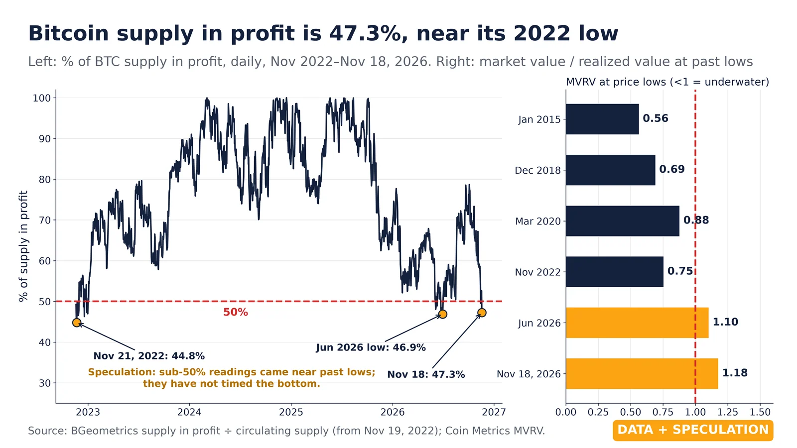
Bitcoin supply in profit 47.3% on Nov 18, 2026; 44.8% at the Nov 2022 low. BGeometrics, Coin Metrics.
Data + Speculation
- Nov 18, 2026 (Data): 9.51 million of 20.11 million bitcoin were in profit, 47.3%, matching Rand. The reading was 52.6% the day before; a 3.1% price drop to $62,897 moved it five points.
- Nov 21, 2022 and Jun 30, 2026 (Data): BGeometrics shows lows of 44.8% and 46.9%, matching Rand’s chart. Since Nov 2022 the measure was below 50% on only 34 of 1,454 days.
- 2015, 2018, 2020 (not verified): Rand’s 35.7%, 39.8% and 42.5% are not in BGeometrics’ free history, which starts in Nov 2022. Rand dates the 2015 low to August; the cycle low was Jan 14, 2015 at $176 (Coin Metrics).
- Past lows (Data): Coin Metrics MVRV, market value over the price holders paid, was below 1 at the 2015 (0.56), 2018 (0.69), 2020 (0.88) and 2022 (0.75) lows. It was 1.10 on Jun 30, 2026 and 1.18 on Nov 18, so holders in aggregate are still in profit.
- Speculation: Rand’s “fortunes are made when most holders are underwater” is a buy signal, not a forecast. A sub-50% reading has come near past lows but has not marked the day of the bottom.
- Omitted: Glassnode figures (paid access).
Today’s 47.3% is real, but a reading that swings five points in a day is not a precise bottom signal. By MVRV, holders were deeper underwater at every earlier low (0.56–0.88) than they are now (1.18).
Rebuttal: docs.coinmetrics.io: asset-metrics/market/mvrv
Original post: Rand Group, Nov 2026
Sources: bitcoin-data.com: v1/supply-profit bitcoin-data.com: v1/supply-current bitcoin-data.com: v1/btc-price community-api.coinmetrics.io: v4/timeseries/asset-metrics docs.coinmetrics.io: asset-metrics/market/mvrv Original post (X)
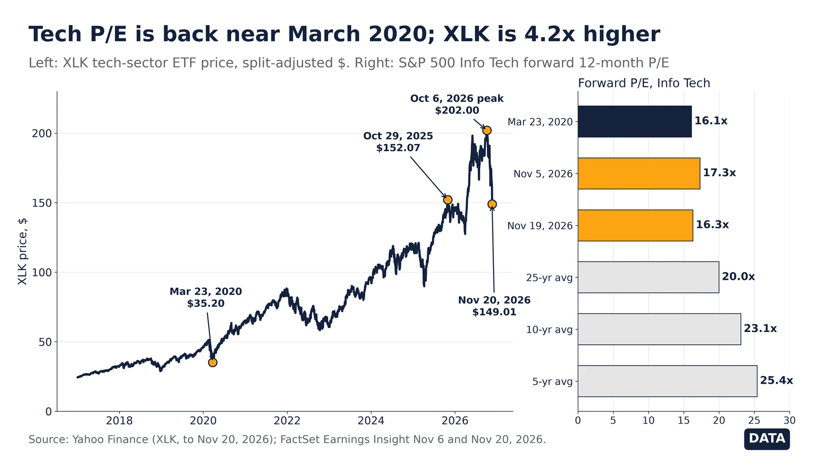
S&P 500 tech forward P/E 16.3x on Nov 19, 2026; 16.1x on Mar 23, 2020. FactSet.
Data
- Nov 19, 2026 (Data): FactSet puts the S&P 500 Information Technology sector at 16.3 times forward 12-month earnings, against 16.1 on Mar 23, 2020. Its 5-year average is 25.4 and its 10-year average 23.1. The S&P 500 as a whole is at 17.1.
- Nov 5, 2026 (Data): FactSet had the sector at 17.3, against a 25-year average of 20.0. Rand’s “priced like March 2020” is right on this measure.
- Nov 20, 2026 (Data): XLK, the tech-sector ETF, closed at $149.01, 26.2% below its Oct 6 peak of $202.00 but 4.2 times its Mar 23, 2020 close of $35.20.
- Same multiple, higher price (Data): with the P/E roughly equal and the price about 4.6 times higher on Nov 19, forward earnings expected for the sector are about 4.5 times their March 2020 level. FactSet shows Q3 2026 tech earnings growth of 72.7%.
- Nov 20, 2026 (TVV estimate): XLK fell 7.3% that day. If earnings estimates held, the multiple would be about 15.1, below the March 2020 low. FactSet’s next report will confirm.
- Omitted: Rand’s Bloomberg figures (31.6x at the Oct 2025 peak, 16.6x now, down 48%) need a Bloomberg terminal and are not verified.
A cheap multiple is only cheap if the earnings hold. In March 2020 earnings were about to fall; today the multiple rests on record AI-driven estimates, so a cut to forecasts would raise the real P/E. The price, unlike the multiple, is nowhere near 2020.
Rebuttal: advantage.factset.com: hubfs/Website/Resources%20Section/Resear
Original post: Rand Group, Nov 2026
Sources: advantage.factset.com: hubfs/Website/Resources%20Section/Resear advantage.factset.com: hubfs/Website/Resources%20Section/Resear finance.yahoo.com: quote/XLK/history Original post (X)

Months' supply is how long the stock of new single-family homes for sale would last at the current sales pace (Census/HUD via FRED). It was 8.4 months in September 2026 and has averaged 8.8 over the past two years, a two-year average last matched in 2008–2010 and 1974–75. Pattern test: since 1963 the series first reached 9 months or more in 5 separate episodes at least two years apart (red dots). Of the 5 episodes whose two-year window is complete, 4 saw a recession within two years, but in 2 of those the recession had already begun, so only 2 gave advance warning. With so few repeats, a 9-month reading is a sign of builder stress, not a reliable recession clock: a stab in the dark on timing.
Data
- Episodes (first month at 9.0+ after two years below): Aug 1973 9.4, recession within 2 years; Mar 1980 9.8 (recession already under way); Jan 1991 9.4 (recession already under way); Aug 2007 9.2, recession within 2 years; Jun 2022 9.4.
- New-home sales were 676k annualised in September 2026, against 809k in January 2022.
- Why supply is high: builders kept completing homes and used rate buy-downs while resale inventory stayed tight, so the new-home market carries more of the stock than in past cycles.
- Doubt: high new-home supply in 2023–2026 came with low existing-home inventory; the overall housing market is less over-supplied than this series alone suggests.
Sources: FRED: Monthly supply of new houses in the US (MSACSR), Census/HUD FRED: New one-family houses sold (HSN1F) FRED: NBER recession indicator (USREC) Census Bureau: New Residential Sales

After-tax corporate profits (with inventory valuation and capital consumption adjustments, BEA via FRED) were $3.88 trillion at an annual rate in Q2 2026, 11.9% of GDP. That is the highest share since the series began in 1947 (the average is 7.2%) and above the 2006 cycle peak of 9.3%. Margins this wide are what an AI and tech boom looks like in the national accounts, and they are also what mean reversion feeds on. Pattern test: TVV finds 7 cyclical profit-share peaks since 1947 that were followed by a fall of at least 1.5 points. A recession began within three years of 4 of them. That repeats often enough to take seriously, but the timing from peak to recession has ranged from months to nearly three years, and the share has stayed above 10% since 2021 without a recession.
Data
- Peaks tested (share of GDP, recession within 3 years?): 1955 Q2 6.8% (yes); 1966 Q1 8.1% (no); 1973 Q1 6.4% (yes); 1977 Q3 7.0% (yes); 1985 Q3 6.4% (no); 1997 Q3 7.9% (no); 2006 Q3 9.3% (yes).
- Peaks are local highs within two years either side, kept only if the share then fell by 1.5 percentage points or more within three years; the most recent high cannot yet qualify.
- Q3 2026 profits are due with BEA's second GDP estimate; the share uses the same-quarter nominal GDP.
Sources: FRED: Corporate profits after tax with IVA and CCAdj (CPATAX), BEA FRED: Gross domestic product (GDP), BEA FRED: NBER recession indicator (USREC) BEA: Corporate profits
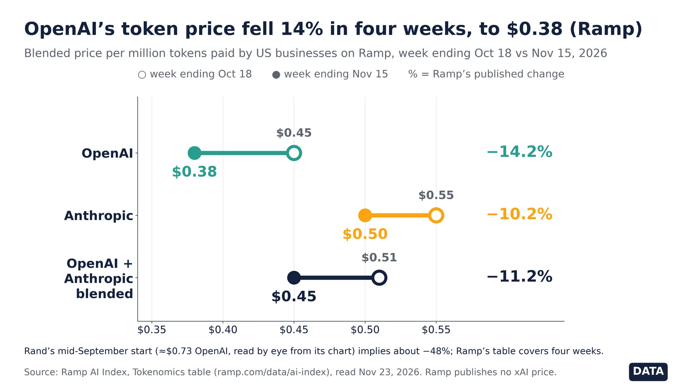
TechVestVentures.com Reports: OpenAI’s blended price per million tokens fell 14.2% to $0.38 in four weeks to Nov 15, 2026. Ramp AI Index.
Data
- Nov 15, 2026 (Data): Ramp’s Tokenomics table gives the blended price per million tokens as OpenAI $0.38 (−14.2% vs the week ending Oct 18, $0.45), Anthropic $0.50 (−10.2%, from $0.55) and OpenAI plus Anthropic combined $0.45 (−11.2%, from $0.51).
- Nov 15, 2026 (Data): in the same week Anthropic had 58.7% of token spend and OpenAI 37.2%; total token spending rose 12.0% and token volume 27.2% against the week ending Oct 18.
- Mid-Sep to Nov 15 (Data, read by eye): Rand’s chart starts near $0.73 for OpenAI, so the post’s “−47%” is about right. Ramp’s public page only gives the last four weeks, so the earlier path is not independently confirmed.
- Speculation: the post’s “war to protect margins” is opinion. Lower prices paid per token may reflect a shift to cheaper models, not only price cuts, since Ramp measures what firms paid.
Caveat: the original chart tags $0.50 as xAI and $0.45 as Anthropic. Ramp’s table has Anthropic at $0.50 and the OpenAI-plus-Anthropic blend at $0.45, and publishes no xAI price, so the original legend looks wrong. The price is a blended average of what firms paid, so a shift to cheaper models also lowers it.
Original post: Rand Group, Nov 2026
Sources: ramp.com: data/ai-index ramp.com: data/how-we-built-the-ramp-ai-index Original post (X)
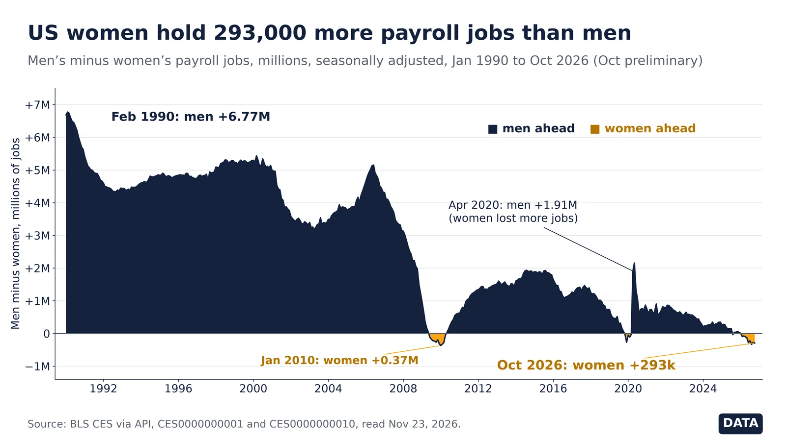
TechVestVentures.com Reports: US women held 293,000 more payroll jobs than men in October 2026 (preliminary). BLS CES.
Data
- Oct 2026 (Data, preliminary): women hold 79.79 million payroll jobs and men 79.50 million, so women lead by 293,000. Arouet says 176,000.
- Sep 2026 (Data, preliminary): women led by 276,000; Aug 332,000. No recent month gives 176,000, so the post probably used an older release or a different series.
- Feb 1990 (Data): men led by 6.77 million, the post’s “nearly 7 million”. The 1990s average was about 5.0 million, and Dec 1999 was 5.29 million.
- Jun 2009 to Apr 2010 (Data): women led during the Great Recession, by up to 368,000. Women also led in Nov 2019 to Mar 2020, in Aug 2025, and in every month from Feb 2026 to Oct 2026.
- Speculation: the post’s link between women’s jobs and later marriage or lower fertility is opinion. Payroll data count jobs, not people, and cannot show it.
Payroll surveys count jobs, not workers, so someone with two jobs counts twice. Men are derived as total nonfarm minus women. Women dominate health and education, which have grown fastest, while men dominate construction, mining and manufacturing, so the crossover reflects sector mix. Men’s self-employment is not on payrolls.
Original post: Michael A. Arouet, Nov 2026
Sources: api.bls.gov: publicAPI/v2/timeseries/data/CES00000000 api.bls.gov: publicAPI/v2/timeseries/data/CES00000000 fred.stlouisfed.org: series/CES0000000010 bls.gov: news.release/empsit.t17.htm Original post (X)